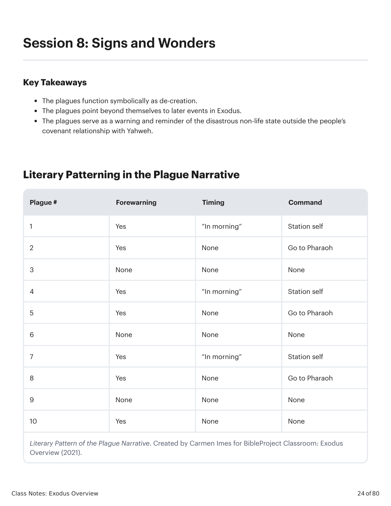
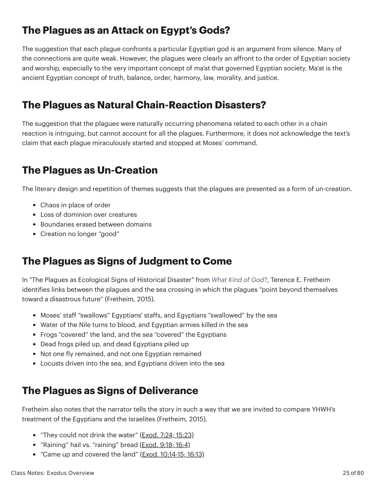

Sinais e MaravilhasSigns and Wonders
Class Notes: Exodus Overview
24 of 80
Session 8: Signs and Wonders
Key Takeaways
The plagues function symbolically as de-creation.
The plagues point beyond themselves to later events in Exodus.
The plagues serve as a warning and reminder of the disastrous non-life state outside the people’s
covenant relationship with Yahweh.
Literary Patterning in the Plague Narrative
Plague #
Forewarning
Timing
Command
1
Yes
“In morning”
Station self
2
Yes
None
Go to Pharaoh
3
None
None
None
4
Yes
“In morning”
Station self
5
Yes
None
Go to Pharaoh
6
None
None
None
7
Yes
“In morning”
Station self
8
Yes
None
Go to Pharaoh
9
None
None
None
10
Yes
None
None
Literary Pattern of the Plague Narrative. Created by Carmen Imes for BibleProject Classroom: Exodus
Overview (2021).

�������Êxodo X:Y. Tradução e Design Literário por Tim Mackie para BibleProject Classroom: José (2021).Exodus X:Y. Translation and Literary Design by Tim Mackie for BibleProject Classroom: Joseph (2021).
Class Notes: Exodus Overview
25 of 80
The Plagues as an Attack on Egypt’s Gods?
The suggestion that each plague confronts a particular Egyptian god is an argument from silence. Many of
the connections are quite weak. However, the plagues were clearly an affront to the order of Egyptian society
and worship, especially to the very important concept of ma’at that governed Egyptian society. Ma’at is the
ancient Egyptian concept of truth, balance, order, harmony, law, morality, and justice.
The Plagues as Natural Chain-Reaction Disasters?
The suggestion that the plagues were naturally occurring phenomena related to each other in a chain
reaction is intriguing, but cannot account for all the plagues. Furthermore, it does not acknowledge the text’s
claim that each plague miraculously started and stopped at Moses’ command.
The Plagues as Un-Creation
The literary design and repetition of themes suggests that the plagues are presented as a form of un-creation.
Chaos in place of order
Loss of dominion over creatures
Boundaries erased between domains
Creation no longer “good”
The Plagues as Signs of Judgment to Come
In "The Plagues as Ecological Signs of Historical Disaster" from What Kind of God?, Terence E. Fretheim
identifies links between the plagues and the sea crossing in which the plagues “point beyond themselves
toward a disastrous future” (Fretheim, 2015).
Moses’ staff “swallows” Egyptians' staffs, and Egyptians “swallowed” by the sea
Water of the Nile turns to blood, and Egyptian armies killed in the sea
Frogs “covered” the land, and the sea “covered” the Egyptians
Dead frogs piled up, and dead Egyptians piled up
Not one fly remained, and not one Egyptian remained
Locusts driven into the sea, and Egyptians driven into the sea
The Plagues as Signs of Deliverance
Fretheim also notes that the narrator tells the story in such a way that we are invited to compare YHWH’s
treatment of the Egyptians and the Israelites (Fretheim, 2015).
“They could not drink the water” (Exod. 7:24; 15:23)
“Raining” hail vs. “raining” bread (Exod. 9:18; 16:4)
“Came up and covered the land” (Exod. 10:14-15; 16:13)

�������Êxodo X:Y. Tradução e Design Literário por Tim Mackie para BibleProject Classroom: José (2021).Exodus X:Y. Translation and Literary Design by Tim Mackie for BibleProject Classroom: Joseph (2021).
Class Notes: Exodus Overview
26 of 80
The Plagues as a Warning
Deuteronomy 28:58-60 NIV
58 If you do not carefully follow all the words of this law, which are written in this book, and do not revere
this glorious and awesome name—the LORD your God— 59 the LORD will send fearful plagues on you and
your descendants, harsh and prolonged disasters, and severe and lingering illnesses. 60 He will bring on
you all the diseases of Egypt that you dreaded, and they will cling to you.
Reflection Question
Reflect on the plagues as a form of de-creation. How does this help you connect Exodus to Genesis? How
does this set up what is yet to come in the rest of Exodus?